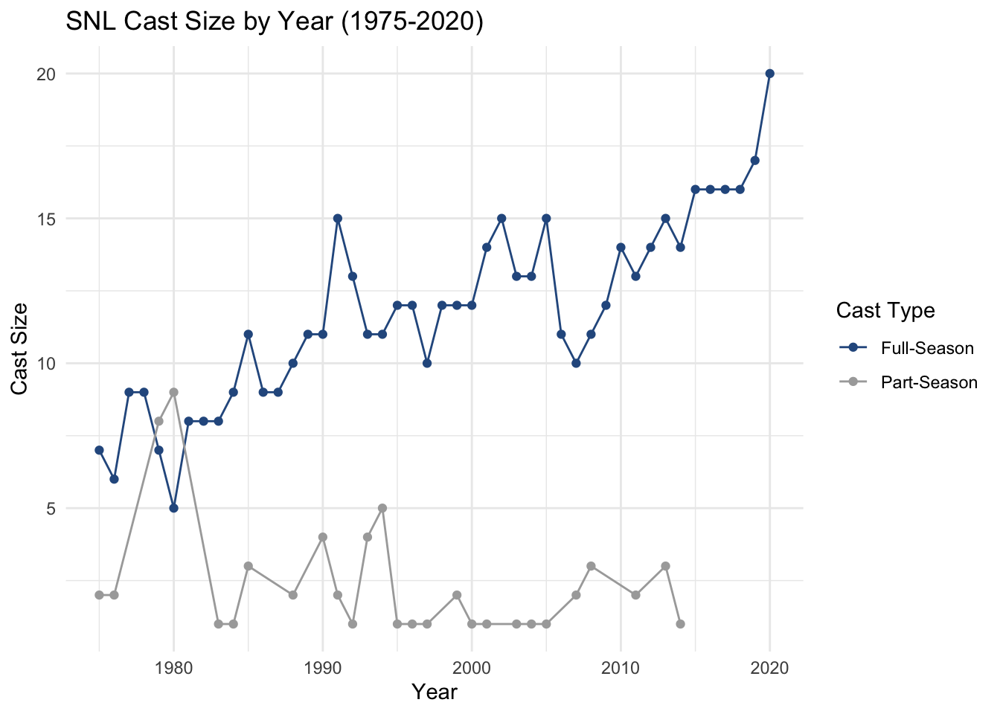
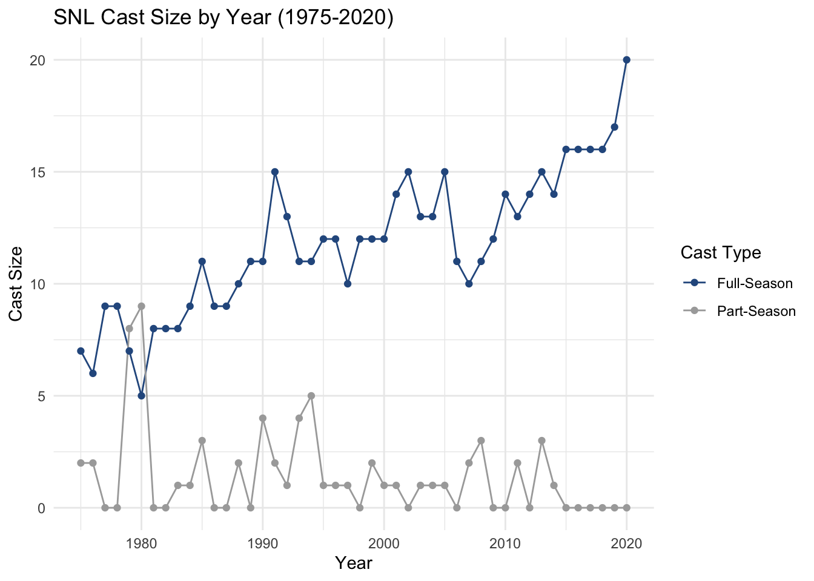

library(tidyverse)
library(here)
library(readr)
library(stringr)
library(purrr)
library(glue)
knitr::opts_chunk$set(echo = TRUE, warning=FALSE, message=FALSE)Challenge 10
challenge_10
snl
jocelyn_lutes
purrr
purrr
Challenge Overview
Use purrr with a function to perform some data science task. What this task is is up to you. It could involve computing summary statistics, reading in multiple datasets, running a random process multiple times, or anything else you might need to do in your work as a data analyst. You might consider using purrr with a function you wrote for challenge 9.
Implementation
For this challenge, I will use the SNL dataset that was used in Challenge 8. The main focus will be to use the purrr package to accomplish two tasks:
Import multiple datasets at once
Fill-in missing rows
Goal 1: Read in multiple data files
To begin, I am interested in learning how purrr can be used to read in multiple data files at the same time. To do this, we will begin by creating a list of the file names corresponding to the SNL dataset. This can be done by using list.files() to view all files in the _data folder and using purrr::keep() with stringr::str_detect to filter to only file names containing 'snl_'.
# list all files
# use purrr::keep() to only keep the file names containing snl_
dir_path <- here('posts', '_data')
snl_files <- keep(list.files(dir_path), ~str_detect(.x, 'snl_'))
snl_files[1] "snl_actors.csv" "snl_casts.csv" "snl_seasons.csv"Next, we will import each of the data frames at once. To do this, we will use the purrr::map() function along with readr::read_csv to save each data frame as an element of an R list. As a pre-processing step, we will also use purrr::map() to convert the individual file names into full file paths.
# first we will use purrr::map() to prepend the `_data` directory to each file name
snl_files <- map(snl_files, ~glue("{dir_path}/{.x}"))
# then, we read in each df to a list
snl_df_list <- snl_files %>%
map(read_csv)We can then easily, filter the list to get the separate data frames, which can be joined in the same way as Challenge 8.
actors <- snl_df_list[[1]]
cast <- snl_df_list[[2]]
seasons <- snl_df_list[[3]]
joined <- cast %>%
left_join(actors, by = 'aid') %>%
left_join(seasons, by = 'sid', suffix = c('_actor', '_season'))
joinedGoal 2: Fill in “Missing” Rows
When working on the analysis portion of Challenge 8, I noticed that, when computing summary statistics, if a combination of year and cast_type did not appear in the raw data table, the point would be missing from the graph. In the figure below, this is illustrated by the line for Part-Season missing several points on the graph.
joined %>%
# limit to cast members
filter(type == 'cast') %>%
# create a full-time cast indicator var
mutate(full_time_cast = factor(ifelse(season_fraction == 1, 'Full-Season', 'Part-Season'))) %>%
# get the count of actors for each year and cast type
distinct(year, aid, full_time_cast) %>%
group_by(year, full_time_cast) %>%
summarize(count = n()) %>%
# plot the change over time
ggplot(aes(x = year, y = count, color = full_time_cast)) +
geom_line() +
geom_point() +
theme_minimal() +
labs(title = 'SNL Cast Size by Year (1975-2020)',
x = 'Year',
y = 'Cast Size',
color = 'Cast Type') +
scale_color_manual(values = c('#2B598E', 'darkgrey'))
When computing the summary statistics (where we are essentially counting the number of rows when grouping by year and cast_type), if there are 0 rows, we would the count to be 0 instead of just not appearing in the data. We can use purrr to help us fill in these rows.
First, we use purrr::cross_df() to create a data frame containing all possible combinations of year and cast_type. Because there are 46 years covered by the dataset, we should expect to see 92 rows in the resulting data frame–which we do!
# create vector of distinct years
years = joined %>%
distinct(year) %>%
pull(year)
# create a vector of distinct cast types
cast_types = c('Full-Season', 'Part-Season')
# use purrr::cross_df() to create a df containing all possible combos of year and cast type.
combos <- list(year = years, cast_type = cast_types)
year_cast_combos <- cross_df(combos) %>%
arrange(year, cast_type)
year_cast_combosNow, we can construct a data frame (counts) that contains the counts of cast members by year and cast_type. The counts data frame can be left-joined to the year_cast_combos data frame. If a year-cast_type combination was missing from the original data frame, it will have an NA count.
# get summary counts df
counts <- joined %>%
# limit to cast members
filter(type == 'cast') %>%
# create a full-time cast indicator var
mutate(cast_type = factor(ifelse(season_fraction == 1, 'Full-Season', 'Part-Season'))) %>%
# get the count of actors for each year and cast type
distinct(year, aid, cast_type) %>%
group_by(year, cast_type) %>%
summarize(count = n())
# start with all possible years
full_counts <- year_cast_combos %>%
# join the published data
left_join(counts, c('year', 'cast_type'))
full_countsThe NA values can then be filled with 0. Now, when we re-plot the figure, we see that the same number of points appear for both Full-Time and Part-Time cast.
full_counts %>%
mutate(count = replace_na(count, 0)) %>%
ggplot(aes(x = year, y = count, color = cast_type)) +
geom_line() +
geom_point() +
theme_minimal() +
labs(title = 'SNL Cast Size by Year (1975-2020)',
x = 'Year',
y = 'Cast Size',
color = 'Cast Type') +
scale_color_manual(values = c('#2B598E', 'darkgrey'))